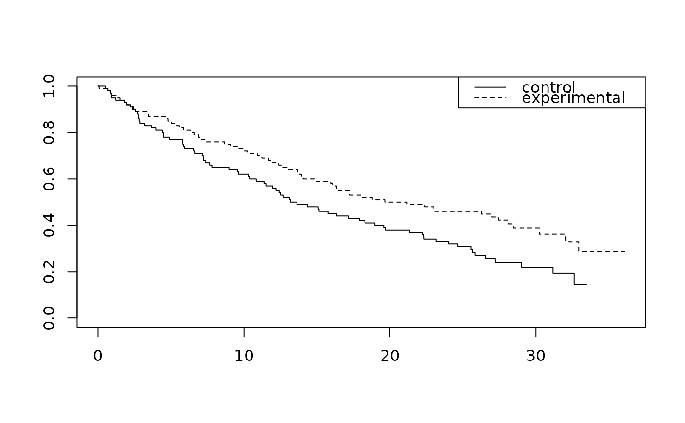

Simulated survival dataset with delayed treatment effect
Source:R/mb_delayed_effect.R
mb_delayed_effect.RdMagirr and Burman (2019) considered several scenarios for their
modestly weighted logrank test.
One of these had a delayed treatment effect with a hazard ratio
of 1 for 6 months followed by a hazard ratio of 1/2 thereafter.
The scenario enrolled 200 patients uniformly over 12 months and
cut data for analysis 36 months after enrollment was opened.
This dataset was generated by the sim_pw_surv() function
under the above scenario.
References
Magirr, Dominic, and Carl‐Fredrik Burman. 2019. "Modestly weighted logrank tests." Statistics in Medicine 38 (20): 3782--3790.
Examples
library(survival)
library(dplyr)
fit <- survfit(Surv(tte, event) ~ treatment, data = mb_delayed_effect)
# Plot survival
plot(fit, lty = 1:2)
legend("topright", legend = c("control", "experimental"), lty = 1:2)

# Set up time, event, number of event dataset for testing
# with arbitrary weights
ten <- mb_delayed_effect |> counting_process(arm = "experimental")
head(ten)
#> stratum events n_event_tol tte n_risk_tol n_risk_trt s o_minus_e
#> 1 All 1 1 0.07659251 200 100 1.000 0.5000000
#> 2 All 1 0 0.49067015 199 99 0.995 -0.4974874
#> 3 All 1 1 0.65465035 198 99 0.990 0.5000000
#> 4 All 1 0 0.65906384 197 98 0.985 -0.4974619
#> 5 All 1 1 0.81945349 196 98 0.980 0.5000000
#> 6 All 1 0 0.82788909 195 97 0.975 -0.4974359
#> var_o_minus_e
#> 1 0.2500000
#> 2 0.2499937
#> 3 0.2500000
#> 4 0.2499936
#> 5 0.2500000
#> 6 0.2499934
# MaxCombo with logrank, FH(0,1), FH(1,1)
ten |>
fh_weight(rho_gamma = data.frame(rho = c(0, 0, 1), gamma = c(0, 1, 1)), return_corr = TRUE) |>
pvalue_maxcombo()
#> [1] 0.01104911
# Magirr-Burman modestly down-weighted rank test with 6 month delay
# First, add weights
ten <- ten |> mb_weight(6)
head(ten)
#> stratum events n_event_tol tte n_risk_tol n_risk_trt s o_minus_e
#> 1 All 1 1 0.07659251 200 100 1.000 0.5000000
#> 2 All 1 0 0.49067015 199 99 0.995 -0.4974874
#> 3 All 1 1 0.65465035 198 99 0.990 0.5000000
#> 4 All 1 0 0.65906384 197 98 0.985 -0.4974619
#> 5 All 1 1 0.81945349 196 98 0.980 0.5000000
#> 6 All 1 0 0.82788909 195 97 0.975 -0.4974359
#> var_o_minus_e mb_weight
#> 1 0.2500000 1.000000
#> 2 0.2499937 1.005025
#> 3 0.2500000 1.010101
#> 4 0.2499936 1.015228
#> 5 0.2500000 1.020408
#> 6 0.2499934 1.025641
# Now compute test based on these weights
ten |>
summarize(
S = sum(o_minus_e * mb_weight),
V = sum(var_o_minus_e * mb_weight^2),
Z = S / sqrt(V)
) |>
mutate(p = pnorm(Z))
#> S V Z p
#> 1 -18.11459 52.42537 -2.50183 0.006177665
# Create 0 weights for first 6 months
ten <- ten |> mutate(w6 = 1 * (tte >= 6))
ten |>
summarize(
S = sum(o_minus_e * w6),
V = sum(var_o_minus_e * w6^2),
Z = S / sqrt(V)
) |>
mutate(p = pnorm(Z))
#> S V Z p
#> 1 -10.03651 22.5762 -2.112309 0.01732996
# Generate another dataset
ds <- sim_pw_surv(
n = 200,
enroll_rate = data.frame(rate = 200 / 12, duration = 12),
fail_rate = data.frame(
stratum = c("All", "All", "All"),
period = c(1, 1, 2),
treatment = c("control", "experimental", "experimental"),
duration = c(42, 6, 36),
rate = c(log(2) / 15, log(2) / 15, log(2) / 15 * 0.6)
),
dropout_rate = data.frame(
stratum = c("All", "All"),
period = c(1, 1),
treatment = c("control", "experimental"),
duration = c(42, 42),
rate = c(0, 0)
)
)
# Cut data at 24 months after final enrollment
mb_delayed_effect_2 <- ds |> cut_data_by_date(max(ds$enroll_time) + 24)